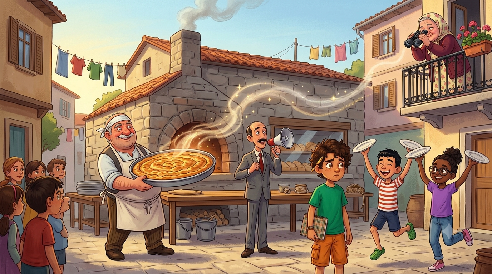
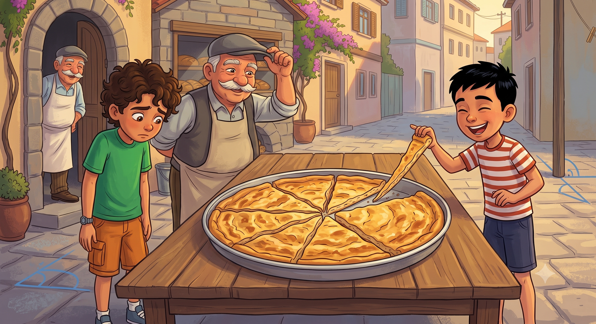
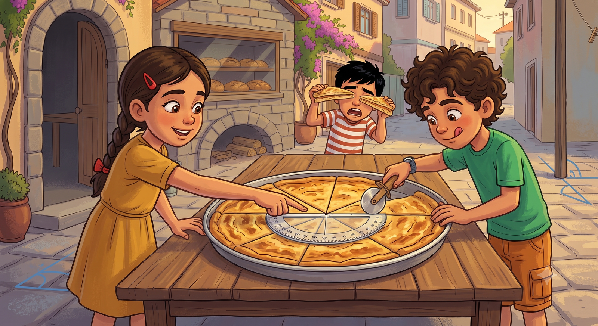

Turnuva şerefine mahalleye dev bir tepsi börek geldi ama dilimler eşit kesilmeyince mahalle ikiye bölündü! Kahramanımız "Dilim Adaleti Genel Sorumlusu" olarak açıölçerle davayı çözebilecek mi?
Sahamız hakem heyetinden tam not alınca muhtar coştu. Hoparlörün başına geçti, boğazını üç kere temizledi: "Sayın mahalleli! Turnuvanın açılışı şerefine, fırıncı Cemal Usta mahallemize dev bir tepsi ıspanaklı börek yapacaktır! Herkes davetlidir!" Mübeccel Teyze balkondan düzeltti: "Kıymalı olsun!" Muhtar bir daha anons etti: "Tashih ediyorum! Börek kıymalı olacaktır!"
Cemal Usta'nın fırınından çıkan tepsiyi görmeliydiniz. Yuvarlak, kocaman, üstü kızarmış, altın gibi parlayan bir börek. Dedem tepsiyi görünce "Maşallah, kağnı tekerleği gibi," dedi. Kokusu tren istasyonundan duyuluyordu; bunu biliyorum çünkü istasyondaki makasçı amca elinde tabakla çıkageldi.
Sonra o mesele çıktı. O malum, o kadim, o bitmeyen mesele: Kim daha büyük dilimi alacak? Emre "Ben golcüyüm, bana büyük dilim," dedi. Ayşe "Ben kaleciyim, açlıktan kale koruyamam," dedi. Ortalık karışmak üzereyken muhtar beni gösterdi: "Saha çizimini o yaptı, dilim adaletini de o sağlar. Kendisini Dilim Adaleti Genel Sorumlusu ilan ediyorum!" Ben daha "ama" diyemeden alkışlar koptu. Defterime yazdım: "Görev 2: Böreği eşit böl. Durum: Yine panik."

İlk denemeyi göz kararı yaptım. Bıçağı böreğe daldırdım, kestim, kestim, kestim. Geri çekilip baktığımda sekiz dilimin sekizi de başka boydaydı. Biri incecikti, kravat gibi. Biri kocamandı, yorgan gibi. Emre ince dilimi havaya kaldırıp "Buna dilim değil, kâğıt ayracı denir," dedi. Mübeccel Teyze dürbünüyle baktı: "Evladım sen onu kesmemişsin, taramışsın."
Dedem, her zamanki gibi, kasketini kaldırıp manzarayı seyretti. "Göz kararı dediğin, kavga kararıdır evlat," dedi. "İnsanlar bunu binlerce yıl önce fark etmiş. Eski çağlarda yaşamış bir uygarlık, yuvarlağı tam 360 eş dilime bölmüş. O günden beri herkes aynı ölçüyü kullanır; adına da derece derler."
Elif hemen hesaba girişti: "Yani tepsinin tamamı 360 derece. Bir kere dönersen başladığın yere gelirsin; buna tam açı denir. Tepsinin yarısı da 180 derece, yani doğru açı — dümdüz bir çizgi!" Ben de bir şey söylemek istedim ama aklıma sadece "böreğin kenarı çıtır olur" geldi. Onu söylemedim.
🧭 Defterime not aldım: Bir tam açı 360 eş parçaya bölünürse her parçaya 1° (bir derece) denir. Tam açı = 360°, doğru açı = 180°, dik açı = 90°.

Dedem dükkândan yarım ay şeklinde, üzeri çizgi çizgi, şeffaf bir alet getirdi: açıölçer. "Bunu marangozlar, mimarlar, mühendisler kullanır. Bugün de börek adaleti için kullanılacak. Alet tarihinde bir ilk olabilir," dedi.
Elif kullanma talimatını ezbere okur gibi anlattı; bu kızın aklının dolabın hangi rafında durduğunu hâlâ merak ediyorum: "Açının köşesini açıölçerin merkezine koyacaksın. Bir kolu sıfıra getireceksin. Öteki kolun gösterdiği sayı, açının ölçüsü."
Hesap ortada: Sekiz kişilik çekirdek kadro için 360 bölü 8, tam 45. Tepsinin ortasına — yani merkeze — bıçağın ucunu koydum, açıölçerle her dilimi tam 45 derece ölçerek kestim. Sekiz dilim, sekizi de birbirinin aynısı. Dedem buna "eş açılar" dedi. Emre iki dilimi üst üste koyup kontrol etti: milim fark yok. "İtiraz edemiyorum," dedi Emre. İlk defa itiraz edemiyordu ve bundan hiç memnun değildi.
📐 Defterime not aldım: Açıölçerde köşe merkeze, bir kol 0°'ye. Diğer kolun gösterdiği değer açının ölçüsüdür: m(AOB) = 45°. Ölçüleri eşit açılara eş açılar denir. 360° ÷ 8 = 45°!

Börekler yenip çaylar içilirken bende bir şey değişti. Nereye baksam açı görüyordum. Fırının aralık kapısı: 90 dereceden küçük, dar açı. Cemal Usta'nın duvara yasladığı merdivenle zemin arasında: 90'dan büyük, geniş açı. Dedemin gönyesinin köşesi: tam 90, dik açı. Yarım kalan börek: dümdüz, 180, doğru açı. Bozulmamış tepsi: 360, tam açı. Makasın ağzı, cımbızın kolları, saatin akrebiyle yelkovanı... Dünya açı doluymuş da benim haberim yokmuş.
Elif'e dedim ki: "Galiba açı hastalığına yakalandım." Elif omuz silkti: "Ona hastalık denmez, matematik denir." Mübeccel Teyze balkondan bağırdı: "Evladım, benim çamaşır ipiyle direk arasındaki açıya da bakıver, mandallar hep bir yana kayıyor!" Baktım: dar açı. İpi düzelttik, dik açı yaptık, mandallar durdu. Mahallede açıölçerle çözülemeyecek dert yokmuş meğer.
Tam eve dönüyorduk ki muhtar geldi; elinde bir liste vardı ve resmî sesiyle okudu: "Sayın Dilim Adaleti Genel Sorumlusu! Cemal Usta fırını yenileyecektir. Ustalara açı raporu lazımdır. Fırındaki bütün açıları ölçüp çeşitlerini bildiriniz!" Defterime baktım. Defterim bana baktı. Hadi bakalım.
🔍 Defterime not aldım: Dar açı < 90° · Dik açı = 90° · Geniş açı: 90° ile 180° arası · Doğru açı = 180° · Tam açı = 360°.